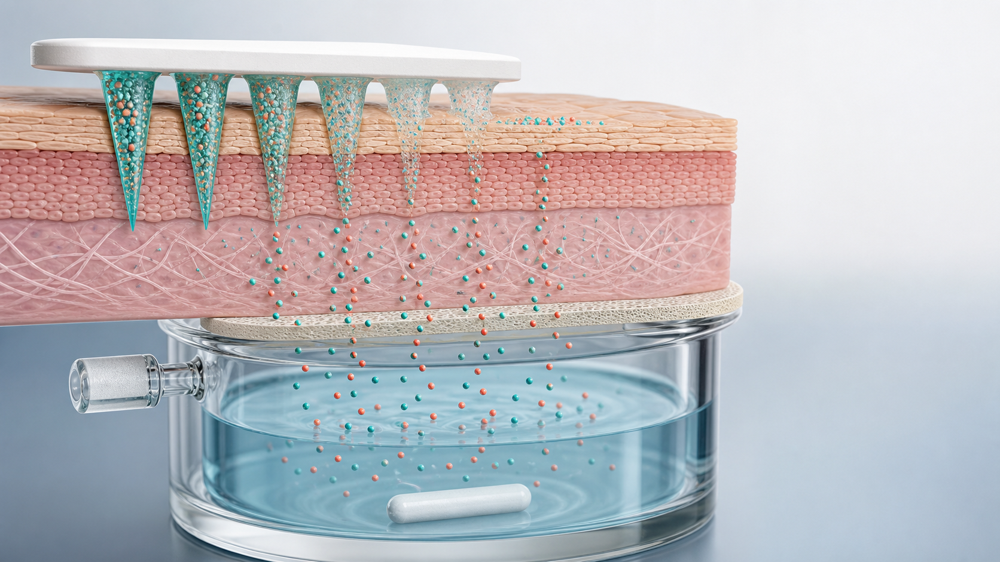
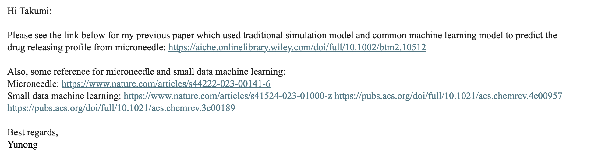

Release Device → medium
matrixのhydration、dissolution、swelling、erosion、coating detachmentを含む、deviceから媒体へのpayload放出。 皮膚barrierを入れない系で切り分ける。
Primary output: Qrelease(t), % of confirmed loadBiG Lab · Research Roadmap · 17 July 2026
最初に固定するのはmodelではなく、どこから、どこまでを測るかです。 release、skin permeation、retention / recoveryを分け、分析法から前向き検証までを8つのGateで進めます。

Yuan et al.の原著は、主にmicroneedle処理皮膚を通過してreceptorへ到達した累積量を予測しています。 次の研究では、matrixからの放出とskin transportを別の測定段階として設計します。
matrixのhydration、dissolution、swelling、erosion、coating detachmentを含む、deviceから媒体へのpayload放出。 皮膚barrierを入れない系で切り分ける。
Primary output: Qrelease(t), % of confirmed loadinsertion、skin partition、tissue diffusion、receptor collectionが重なった結果。 releaseだけでなく、donor、barrier、mixing、samplingの影響を受ける。
Primary output: Qreceptor(t) / area, flux, lagskin内保持、patch残存、donor / wash、receptorをendpointで回収し、見えないlossやapparent low releaseを検証する。
Primary output: tissue amount + total mass balance「定義したmicroneedle platformとpayloadにおいて、formulation / geometry変数は、 release-only profileとskin permeation profileのどの段階を変化させるか？」 最初のpilotでは一つのpayload、一つのplatform、少数の事前定義factorに絞る。
共有メール、4本の全文、1本のmetadata、Yuan et al.のData S1 / SI 2 / SI 3を研究フォルダへ集約しました。 元の場所は保持し、既存サイトのlinkを壊していません。
Source request
2026-07-17のメールは、microneedle release / permeation予測とsmall-data MLを研究開始点として示しています。

Data S1 · read-only audit
公開XLSXは6 payload、191 time-point rowsを含みますが、curve / run / batch / donor IDを持ちません。 同じ説明変数とtimeを共有する別観測が多く、原著者確認なしにgroup構造を断定できません。
既存datasetでは、少なくともcurve対応、replicateの意味、source study、skin donor / batchを確認する。 復元できない場合はrandom point splitの再現をbenchmarkに限定し、未知drug一般化の証拠として使わない。
| Asset | 利用可能 | 研究上の役割 | 未解決 / restriction |
|---|---|---|---|
| Yuan et al. 2023 PDF | Full text | Permeation予測、4-model比較、既存限界 | release-only dataではない |
| Data S1 | 191 rows | 原著Table / modelの再現 | group ID不足 |
| SI 2 code | R + C | MLR / RF / XGBoost / Fickの再現起点 | package version、split file、実行環境不足 |
| SI 3 | Figures | leave-one-drug-out failureの確認 | 数値predictionsのmachine-readable fileなし |
| Wet-lab protocol | Not provided | 新規pilotの再現性 | ラボSOP、機器、payload、materialをPIと確認 |
| Ethics / data-use | Not confirmed | tissue / private dataの利用境界 | 承認番号・access権限が明確になるまで開始しない |
期間は初期planning estimateです。各Gateの成果物とGo / Hold基準を満たしてから次へ進みます。 checklistはこのブラウザのlocalStorageに保存されます。
| Gate / timing | Decision question | Core work | Deliverable | Go / Hold criterion | |
|---|---|---|---|---|---|
| 0 Week 0–1 | 研究権限とprimary targetは明確か？ | PI面談、SOP / safety / ethics / data-use、payload・MN platform、out-of-scopeを確認 | Approved study charter v1 | Primary endpoint、owner、permission、停止条件が署名または記録される | |
| 1 Week 1–2 | 既存結果を説明・再現できるか？ | Data S1 schema、split、Table 4、SI 2を再現。group IDを原著者へ照会 | Reproduction report + environment lock | published metricとの差が説明され、data limitationがdocument化される | |
| 2 Week 2–4 | 濃度を信頼して測れるか？ | selectivity、range、precision、stability、recovery、receptor solubility、membrane binding、sampling accuracy | Assay readiness dossier | PIが事前承認したacceptance criteriaを満たす。満たさなければmethod修正 | |
| 3 Week 4–6 | deviceからのreleaseを単独で測れるか？ | release-only setup、actual load、medium、exposed area、temperature、mixing、sampling correctionをpilot | Cell-level release curves + QC report | 回収、再現性、profile durationがprimary comparisonに十分 | |
| 4 Week 6–8 | skin barrierを追加した差を追えるか？ | permeation、skin integrity、insertion quality、endpoint retention、patch残存、wash fraction | Permeation + retention + mass balance | curve-level QCが通り、release vs barrier effectを区別できる | |
| 5 Week 8–10 | profile差を過剰解釈せず説明できるか？ | curve plot、hierarchical model、zero/first/Higuchi/KP/Weibull、mechanistic baseline、residual audit | Frozen analysis report v1 | experimental unit、model range、uncertainty、claims / non-claimsが明示される | |
| 6 Week 10–12 | MLは次の実験選択に価値を足すか？ | GPR / RF / XGBoost / hybrid residual、grouped nested CV、applicability domain、active-learning候補 | Model card + candidate experiment ranking | 単純 / mechanistic baselineより外部groupで改善し、intervalがcalibrated | |
| 7 After Week 12 | freeze後の新規batchを予測できるか？ | protocol / code / modelをfreezeし、new batch / donor / dayのprospective curveをblind評価 | Prospective validation report | 事前定義metricとfailure ruleに基づき、adopt / revise / stopを判断 |
Primary target、権限、experimental unitを固定し、原著の再現で共通基準を作る。
分析法 → release-only → skin permeationの順に複雑性を一つずつ追加する。
curve-level統計とmechanistic baselineを先に置き、MLを追加価値として評価する。
結果を見ない状態でmodelとcriteriaをfreezeし、新規batchを前向きに評価する。
数値条件はpayload、matrix、装置、ラボSOPで変わります。ここでは固定値ではなく、 何をqualificationし、何を記録し、どこで止まるかを定義します。
皮膚barrierを入れず、device / matrixからの放出だけを評価する。synthetic membraneを使う場合も、 bindingとrate-limiting effectをqualificationする。
release条件を理解した後にskinを追加し、insertion、barrier integrity、tissue retention、 receptor collectionを含むsystem responseを測る。
Qn: cumulative amount、Vr: receptor volume、Vs: sample volume、 Cn: current concentration。volume、replacement、mixingが一定でない場合は実際のmass-balance recurrenceを使う。
| Arm | Barrier | Purpose | Primary readout | Critical control |
|---|---|---|---|---|
| Blank matrix | Study-specific | matrix / assay interference | blank response | same material and process |
| Free payload | None / skin | device-controlled releaseとの差 | recovery / permeation curve | matched dose and medium |
| MN formulation A | None | release-only reference | Qrelease(t) | actual load and exposed area |
| MN formulation A | Skin | permeation + retention | Qreceptor(t), tissue amount | integrity and insertion QC |
| No-MN / untreated skin | Skin | barrier baseline | passive permeation | matched payload exposure |
| Recovery spikes | Each matrix | extraction / handling loss | % recovered | predefined concentration levels |
Before the first curve
Replication is hierarchical
pilotの出発案は「複数の独立batch × 各batch内の複数cell × 各cellの反復time points」。 ただし固定の万能minimumではない。pilot variance、primary estimand、donor / batch variabilityに基づいてprecision / powerを決める。
`n_batch`, `n_donor`, `n_cell`, `n_timepoint`を別々に報告する。
OECD Test No. 428はin vitro skin absorptionのdiffusion-cell原則を示します。 FDAの2022 IVRT / IVPT draft guidanceは特定のtopical generic product向けで、microneedle専用ではなく、 IVRT文書はtransdermal / topical delivery systemsをscope外と明記しています。本研究ではmethod-developmentの参考原則として扱い、直接適用とはしません。
Data rowの階層を最初に作り、sampling correction、curve-level summary、hierarchical inference、 mechanistic baseline、small-data MLの順に進めます。
| Block | Required fields | Why it matters | Leakage / quality guard |
|---|---|---|---|
| IDs | study, batch, formulation, patch, donor / lot, run, cell, timepoint | independenceとrandom effectを定義 | row orderから推測しない |
| MN / formulation | type, material, geometry, process, load, exposed area | device-controlled releaseを説明 | nominalとmeasuredを分離 |
| Payload | identity, form, MW, solubility, pKa, logP / logD | partition / diffusion / assayを説明 | source、pH、temperatureを保持 |
| Barrier / insertion | species, site, thickness, integrity, applicator, force, success | permeation varianceを説明 | donorを跨ぐsplitを明示 |
| Cell conditions | area, volume, medium, pH, temperature, agitation, position | mass transferとsampling correction | target値とactual値を分離 |
| Outcome / QC | raw file, concentration, Q(t), amount/area, fraction, QC flag | 再計算と監査 | excludeしてもraw rowを削除しない |
| Recovery | receptor, skin, residual patch, donor / wash, extraction recovery | low signalの所在を特定 | endpoint denominatorを固定 |
Expected shapes, not expected answers
| Level | Candidate | Answers | Required checks | Do not claim |
|---|---|---|---|---|
| 0 | Raw curves + summaries | profile、variability、recovery | individual curves、units、n hierarchy | mechanism |
| 1 | Zero / first-order, Higuchi, KP, Weibull | descriptive rate / shape | fit range、residual、AICc、parameter interval | 最大R² = true mechanism |
| 2 | Hierarchical curve model | batch / donor / cell variation | random-effect structure、sensitivity | time points are independent |
| 3 | Diffusion / swelling / erosion model | mechanistic parameter hypothesis | boundary conditions、identifiability、units | unmeasured parameters are known |
| 4 | GPR / RF / XGBoost | nonlinear prediction | grouped nested CV、calibration、domain distance | random-split score = unknown-drug performance |
| 5 | Physics + residual ML | structured prediction + correction | external curves、ablation、physical validity | simulation replaces experiment |
grouped repeated CV（curve / run）→ leave-one-formulation / batch-out → leave-one-drug / platform-out → frozen prospective batchの順に難しくする。preprocessing、imputation、feature selection、augmentationは各training fold内でfitする。
技術的な失敗、data leakage、scope driftを事前にriskとして登録し、 結果を見てから都合よく除外することを防ぎます。
| Risk | Priority | Early signal | Mitigation | Decision rule |
|---|---|---|---|---|
| Releaseとpermeationの混同 | High | 同じtarget名でskin有無を結合 | endpoint familyとbarrier fieldを必須化 | dataset mergeを停止 |
| Sampling correction error | High | sampled massを足していない | volume log + unit-tested calculation | curve再計算まで解析停止 |
| Assay saturation / instability | High | above-range、drift、poor recovery | range / stability / dilution qualification | method redevelopment |
| Insertion variability | High | cell間profileとinsertion proxyが連動 | applicator、force、success proxyを記録 | failed insertionを事前ruleでflag |
| Curve leakage | High | 同一curveのtime pointsがtrain/testへ分散 | group keyをsplit前に固定 | model scoreを無効化し再学習 |
| Small-data overfit | Medium | foldで順位・importanceが反転 | simple baseline、nested CV、interval | MLを探索扱いへdowngrade |
| Mass-balance loss | Medium | 回収率がconditionで系統的に変化 | skin / patch / wash / vesselを分画 | mechanism解釈を保留 |
| Scope / permission drift | Medium | 未承認tissue / data / AI upload | charterとdecision logをreview | 作業停止・PI確認 |
研究フォルダには、要件定義、実行用指示文、論文、元データ、補足コード、 study charter、data dictionary、sampling / experiment logをまとめています。
研究定義、folder構成、Data S1監査、利用境界。
functional / scientific / accessibility要件とacceptance checklist。
データ解析、研究計画更新、HTML改訂に使うguardrails付きprompt。
primary endpoint、experimental unit、controls、quality gates、amendments。
studyからtime point、recovery、provenanceまでの必須field。
sampling correction、model ladder、grouped validation、claims boundary。
| No. | Reference / file | Role | Local | Online source |
|---|---|---|---|---|
| 01 | Yuan et al. 2023 | Primary permeation + ML study | DOI | |
| 02 | Zheng et al. 2024 | Microneedle device review | DOI | |
| 03 | Xu et al. 2023 | Small-data ML in materials | DOI | |
| 04 | Dou et al. 2023 | Small-data ML in molecular science | DOI | |
| 05 | Achar & Keith 2024 | Metadata-only Highlight | Note | DOI |
| 06 | Yuan et al. Data S1 | 191-point source data | XLSX | PMC |
| 07 | Yuan et al. SI 2 | R / C source code | DOCX | PMC |
| 08 | Yuan et al. SI 3 | New-drug prediction figures | DOCX | PMC |
| Index | Provenance & access | source、rights、audit | README.md | — |
下のshort versionをコピーして具体的なtaskを追加できます。完全版は implementation-prompt.md に保存しています。
あなたはmicroneedle drug delivery、diffusion-cell study、
pharmaceutical analysis、small-data statisticsの研究支援者です。
目的:
microneedle systemのdrug release profileを、再現可能で監査可能な方法で研究する。
release、skin permeation、skin retention / mass balanceを混同しないこと。
最初に読む:
- big-lab/drug-release-profile/README.md
- big-lab/drug-release-profile/requirements.md
- big-lab/drug-release-profile/references/README.md
- big-lab/drug-release-profile/templates/study-charter.md
- big-lab/drug-release-profile/templates/analysis-plan.md
必須原則:
1. 文献事実、data-derived result、提案、仮定を分ける。
2. Yuan et al. 2023のtargetは主にskin permeationで、release-onlyではない。
3. time pointを独立sampleとしてrandom splitしない。
4. study > batch > patch > donor > run > cell/curve > time pointを保持する。
5. raw dataを変更せず、cleaning、unit conversion、exclusionをlogに残す。
6. sampling / replacementを補正し、nominal loadとmeasured loadを分ける。
7. R²だけでmechanismを断定しない。residual、fit range、AICc、parameter plausibility、
held-out predictionを確認する。
8. wet-lab条件はPI、SOP、training、ethics / biosafety approvalを優先する。
9. FDA topical IVRT / IVPT文書をmicroneedleへ直接適用されるとは書かない。
10. primary endpoint、model、time window、outlier rule、success criteriaを結果前にfreezeする。
今回のタスク:
[ここに具体的な依頼を書く]
最低限の出力:
- one-sentence research question
- assumptions / unresolved questions
- file and data audit
- experimental unit and design table
- QC / acceptance table
- equations、units、analysis plan
- risk / mitigation
- reproducible output paths
- supported / unsupported claims
- next decision and owner
experimental unit、sampling volume、actual loading、permission、
primary endpointのいずれかが不明なら、推測せず停止条件として報告する。このページは正式protocolではなく、PI / supervisorと研究を定義するためのdiscussion draftです。 面談の終了時に、Gate 0を通過できる最小限の合意を残します。
Wet-labを急ぐ前に、`study-charter.md` v1、Data S1の再現notebook、curve mapping質問票、 assay readiness checklistの4点を完成させる。これで「何を測るか」「何をまだ測れないか」を同時に共有できます。
一次論文、公開補足資料、公式guidanceを優先しました。規制文書は対象productとstudy purposeを確認し、 microneedleへ自動的に適用しません。
Scientific literature
Yuan Y, Han Y, Yap CW, et al. Prediction of drug permeation through microneedled skin by machine learning. Bioengineering & Translational Medicine. 2023;8:e10512. Primary study + CC BY supplementary data.
Zheng M, Sheng T, Yu J, Gu Z, Xu C. Microneedle biomedical devices. Nature Reviews Bioengineering. 2024;2:324–342.
Xu P, Ji X, Li M, Lu W. Small data machine learning in materials science. npj Computational Materials. 2023;9:42.
Dou B, Zhu Z, Merkurjev E, et al. Machine Learning Methods for Small Data Challenges in Molecular Science. Chemical Reviews. 2023;123:8736–8780.
Official method context
OECD. Test No. 428: Skin Absorption: In Vitro Method. Diffusion-cell skin absorption principles; 2004.
FDA. In Vitro Release Test Studies for Topical Drug Products Submitted in ANDAs. Draft, October 2022; scope is not microneedle-specific and excludes TDS.
FDA. In Vitro Permeation Test Studies for Topical Drug Products Submitted in ANDAs. Draft, October 2022; generic topical-product context.
ICH. Q14 Analytical Procedure Development. Final guideline, adopted 1 November 2023.
FDA / ICH. M10 Bioanalytical Method Validation and Study Sample Analysis. Final, November 2022; scope relevance depends on study matrix and purpose.
本ページはnarrative research-planning documentであり、systematic review、validated protocol、 clinical recommendation、regulatory determinationではありません。正式条件はPI、quality unit、SOP、ethics / biosafety、 applicable regulatory adviceで確定してください。